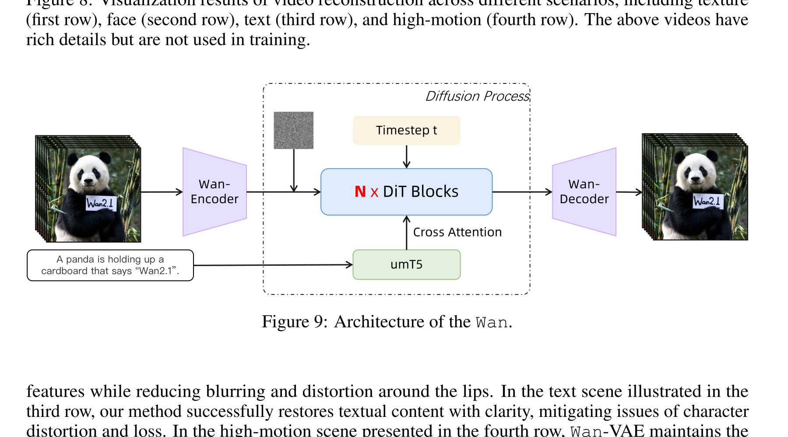

Wan: Open and Advanced Large-Scale Video Generative Models
Team Wan 等 · arXiv 技术报告 · 2025 · arXiv:2503.20314 v2 · Zotero 3IHT7RL9
这是 60 页系统技术报告，不是会议论文。Wan 不只描述一个 Video DiT，还公开数据清洗/字幕、Wan-VAE、flow matching 训练、分布式扩展、推理缓存、量化与多种下游应用，是理解工业级视频模型最完整的公开材料之一。
§1 为什么它值得单独读
§2 架构：简单三件套，难在每一件都能 scale

1. 视频压成 latent
Wan-VAE 同时压缩空间与时间，特征缓存避免长视频重复计算。
2. 文本形成跨注意力条件
umT5 编码长 caption；prompt rewrite 用于缩小用户短提示与训练 caption 的分布差。
3. DiT 学速度场
在 noise 与数据之间插值得到 $x_t$，回归 rectified-flow 速度。
4. 多步 ODE 采样后解码
报告常用约 50 步，并通过并行、缓存与 FP8 降低延迟。
§3 Wan-VAE：为什么 tokenizer 是第一等公民
- Causal 3D convolution
- 按时间顺序编码，适合 I2V 与流式 chunk。
- Feature cache
- 相邻 chunk 重叠部分复用中间特征，既省算力又维持边界一致。
- 三阶段训练
- 先 2D 图像 VAE，再引入视频，最后在更高质量视频上微调。
Wan-VAE 仅 127M 参数；在其 720×720、25 帧评测设置中，同时强调重建质量与 frame-per-latency 效率。这个对 WAM 很关键：闭环速度常先被 tokenizer 限制。
§4 Flow Matching + DiT
- $x_0$
- 高斯噪声 latent。
- $x_1$
- 图像或视频的 Wan-VAE latent。
- $v_\theta$
- DiT 在文本与 timestep 条件下预测速度场，推理时解 ODE 从噪声走向数据。
先做低分辨率图像预训练，再进入图像—视频联合训练，并逐步提高空间分辨率和视频时长；post-training 用更高质量 480p/720p 数据继续联合训练。
§5 系统扩展：14B Video DiT 真正烧在哪里
| 计算瓶颈 | DiT 占训练计算的绝大多数；长视频使 attention 随序列长度平方增长。 |
| 分布式 | VAE/Text Encoder 用数据并行，DiT 用 FSDP + 2D context parallel，并在模块边界转换布局。 |
| 显存 | activation offloading 与 selective gradient checkpointing 组合，避免全量重算。 |
| 可靠性 | 慢机检测、坏节点隔离与自动重启被视为模型训练的一部分。 |
| 推理 | 多 GPU context parallel、diffusion/CFG cache 与 DiT GEMM FP8 量化。 |
§6 证据与边界
§7 对 WAM 的意义
Wan 将视频 tokenizer、flow DiT、长 caption、阶段式数据课程、分布式训练和推理缓存放进同一系统视角。做生成式 WAM 时，这些模块几乎都能复用，只需把条件与输出扩展到机器人状态/动作。
开放视频模型可以产生丰富运动，却没有用动作干预验证可控动力学。WAM 还需要 action-conditioned counterfactual、接触一致性与闭环控制成功率，不能只继承视频 benchmark。